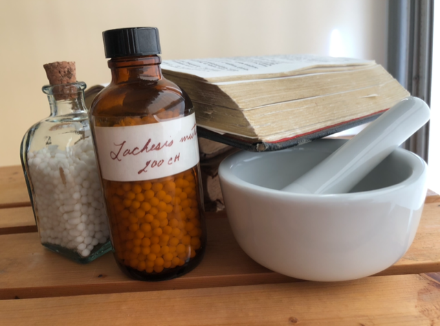

Homeopathy originated in Germany, but it shares a basic concept with Acupuncture, which came from China. The idea is that the vital energy that keeps the body alive and well, can be disrupted or thrown out of balance, which leads to illness. Acupuncture attempts to bring the energy back to normal by inserting needles at specific points on the body. Homeopathy uses specially prepared, energy medicines taken by mouth, to achieve the same end. Both systems work, but, in our opinion, homeopathy is to be preferred for a number of reasons. For one, it involves no pain. Furthermore, it does not require the client to spend long sessions at the practitioner's office. We recommend Acupuncture to potential clients who are not willing to give up their coffee habits. Coffee can disrupt the action of our medicines.
Homeopathy was developed by a German M.D. named Samuel Hahnemann, at the end of the eighteenth century. He had quit regular medicine to work as a translator because the methods that doctors used then were largely harmful. He ran across something in translating that gave him the idea for an experiment. The results led to his creating a new form of medicine, which he called homeopathy. More can be found on this at the website of the National Center for Homeopathy. The new medicine spread throughout Europe rapidly and came to the U.S. in 1833.
James discovered homeopathy in 1989, while seeking help for chronic fatigue syndrome. The spectacular results of homeopathy led him to study homeopathy formally. He was fortunate to study under a leading American homeopath, Linda M. Johnston, MD. Later, he received instruction from master homeopath, Ananda Zaren. James began practicing in a small way, in 1991, with friends and family. When the California legislature passed alternative medicine bill, SB 577, in 2003, James established an online presence with a website. In 2021 he achieved national certification, earning the offical title, Certified Classical Homeopath (CCH).
Potential new clients are entitled to a free 15-minute phone consultation, in order to decide whether or not to move forward with homeopathic treatment. Those choosing to begin treatment may schedule an initial 2-hour video consultation. The cost for this is $225, payable through Zelle or Paypal. One month after the initial consultation, a half-hour follow-up will be scheduled. The cost for this is $75. Furthur follow-ups will occur every 3 months, untill the client's state of health is determined to be in balance. The charge for the first dose of the homeopathic remedy is incuded in the initial consultation fee. Further doses will be purchased through James Midgley or a Homeopathic Laboratory, per the needs of the client.
Text or Call James Midgley at 1+(626)-318-2045, between 4 and 8 PM Pacific Daylight/Standard Time.
